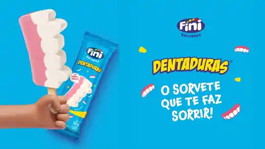
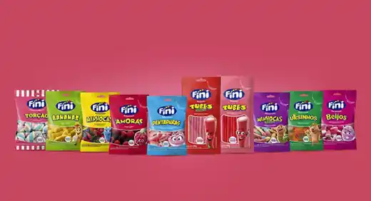
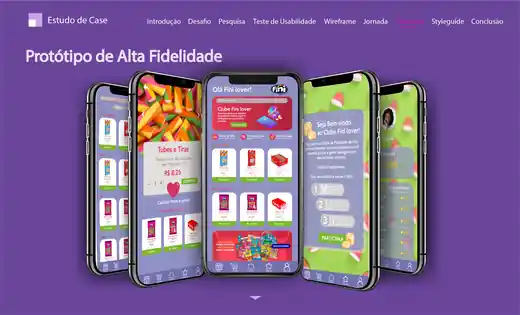

Sweet mix
Textura em primeiro plano.
Uma composição vibrante que transforma os doces em linguagem visual.

Fini / experiência conceitual
Cores, textura e movimento transformados em uma experiência digital divertida, comercial e memorável.

01 / Universo visual
A direção de arte usa os próprios produtos como protagonistas. Na rolagem, cada composição entra em cena como uma campanha diferente.
Uma composição vibrante que transforma os doces em linguagem visual.
Uma campanha reconhecível convertida em um painel digital de alto contraste.
O grid se expande para apresentar variedade sem perder a identidade da marca.

02 / Produto digital
O universo visual também funciona em produto: fidelidade, catálogo, campanhas e relacionamento dentro de uma experiência consistente.

03 / Interação
Clique nas opções para mudar a atmosfera da experiência.
Design que muda de sabor sem perder a personalidade.
Projeto conceitual
Esta experiência é um estudo independente para portfólio, inspirado no universo visual da Fini. Não é uma página oficial da marca e não possui vínculo comercial com ela.